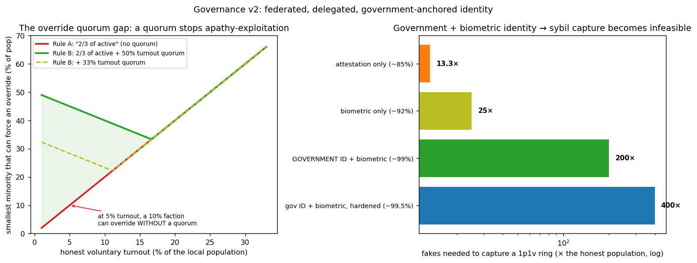

In plain language
Companion to RESULTS - Governance v2 (Federated + Gov ID). Companion added July 11, 2026 — the v1–v5-era runs predate the plain-language convention; written from the committed RESULTS as it stands today (including any verification-pass corrections already applied in that file), with no reinterpretation.
The question
The first governance model assumed a single global vote — one thing to seize. This second model encodes the richer design: decisions local by default with an escalating 2/3 override cascade, delegation for everyday votes (but not overrides), and identity anchored in government legal ID plus EDEN biometrics. Does the richer design hold up better, and what new risks does it buy?
What we found
Four results, each on its own axis. Subsidiarity removes the single global lever: capturing some localities controls only those local decisions, and global change still means clearing the cascade — the attack surface goes from "one vote captures everything" to "capture each community, one at a time." Delegation solves ordinary apathy: at a weak 15% turnout with 10% of identities undetected fakes, an attacker holds 40% of the person-vote house with no delegation (past the 1/3 veto line) but only 10.5% when 70% of citizens delegate — and the pooling risk delegation creates is exactly why it stays forbidden on the high-stakes overrides. The key finding is the override quorum gap: "2/3 of active voters" with no turnout floor gets easier under apathy — at 5% turnout a 10% faction of the population can overturn a local decision, while adding a 50% turnout quorum raises that bar to ~45% (above ~17% turnout the quorum adds little; its whole job is stopping apathy-exploitation). Recommendation: require 2/3 of active votes and a turnout quorum, rising with each ring. And government-anchored identity makes sybil capture infeasible: the fakes needed to capture a ring go from 13× the honest population (attestation-only, ~85% detection) to 200× with government ID plus biometrics (~99%), 400× hardened (~99.5%) — before stake-tied-to-residency raises it further.
The honest catch
Government identity adds a government-trust dependency, and the run is explicit about it. A captured government forging IDs is contained by federation: it mainly corrupts its own local votes, and forging a global 2/3 would take governments summing to two-thirds of world population (≈21 of ~50 jurisdictions; the largest single one, ~17%, falls far short). A government denying IDs is a chokepoint risk — hence the requirement of multiple independent attestors plus a non-government fallback path. Privacy requires the zero-knowledge personhood the white paper already specifies (prove "one unique, attested human" without revealing which). And the model is analytic with illustrative parameters: no vote-buying, no off-chain coordination, no simulated cascade dynamics over time, no model of who classifies a decision's scope — and detection quality remains exogenous, because actually building and securing the identity layer is the real-world work.
One line
Local-by-default governance, delegation for the everyday, a turnout quorum on overrides, and identity anchored in government ID plus biometrics move capture from expensive to practically impossible (fake 200–400× the entire population) — at the price of a government-trust dependency that federation, multiple attestors, a fallback path, and zero-knowledge privacy have to contain.
Words used here (added July 18, 2026 — plain-language house rule; the text above is unchanged). Subsidiarity — decisions made at the most local level that can handle them; the design's point is that there is no single global lever to seize. Override cascade — the escalation ladder: a wider community can overrule a narrower one only by clearing the 2/3 bar, ring by ring. Quorum — the minimum turnout for a vote to count; without one, "2/3 of whoever shows up" gets easier the fewer show up. Sybil — one person pretending to be many accounts; sybil capture means winning votes with fake people. Attestation / attestor — a signed, checkable claim that something is true (here, "this is one real, unique person") and the party who signs it. Federation / federated — split into semi-independent regional units, so a corrupted government mainly poisons its own local votes. Stake — a posted deposit that can be lost, tying a voter's skin to the game (here, tied to residency). Exogenous — fed in from outside rather than produced by the model: detection quality is assumed, because building the identity layer is real-world work. Analytic — worked out with formulas rather than simulated over time.
Figures

Technical results
A second governance model encoding Devan's richer design: subsidiarity (local-by-default with an escalating override cascade), delegation/liquid democracy, a government-backed identity layer, and the turnout-quorum fix. Supersedes the single-global-vote v1 model, which is now just the top ring of the cascade. Files in this folder.
Modeling assumptions (correct me if any are off)
- Subsidiarity: decisions are local by default; a decision escalates only when it spills beyond the locality, and each larger ring can override the smaller one only at a 2/3 supermajority, with a still-larger ring able to re-override at 2/3, up to the world.
- Delegation is allowed for ordinary/local votes (raising effective turnout) but forbidden for the escalating overrides (to prevent delegate collusion) — overrides require active votes.
- Identity = a government legal-ID layer (SSN / national ID) plus EDEN biometric uniqueness (two-factor). This is modeled as a high sybil-detection rate.
- Votes are tied to local stake (residency/ownership), and the world has many independent government attestors (~50 jurisdictions, top-heavy by population).
1. Subsidiarity removes the single global lever
The v1 model assumed one global electorate — one thing to seize. Under subsidiarity there is no global prize for most of governance: capturing k of M localities controls only k/M of local decisions, and global decisions still require clearing the 2/3 escalation cascade. The attack surface goes from "one vote to capture everything" to "capture each community you care about, one at a time." That is a structural anti-capture gain, and it matches the established logic of federalism (match a decision's scope to whom it affects).
2. Delegation solves ordinary apathy
For everyday votes, letting non-voters delegate to a block raises the effective electorate. With a weak 15% natural turnout and 10% of identities undetected-fake, the attacker's share of the one-person-one-vote house is:
- 40% with no delegation (dangerous — past the 1/3 veto threshold), vs
- 10.5% when 70% of citizens delegate their vote.
Delegation directly closes the apathy soft spot the v1 brief flagged — for ordinary governance. The residual risk it introduces (power pooling in popular delegate-blocks, a bribery/coercion target) is exactly why forbidding delegation on the high-stakes overrides is the right call.
3. The override quorum gap — the key finding
Devan's goal is that overriding a local decision should be hard. But "2/3 of active voters" with no turnout floor makes it easier under apathy, because two-thirds of a small active electorate is a small slice of the population. The smallest minority that can force an override:
| Honest voluntary turnout | "2/3 of active" (no quorum) | 2/3 of active + 50% turnout quorum |
|---|---|---|
| 5% | 10% of the population | 45% |
| 10% | 20% | 40% |
| 20% | 40% | 40% |
Without a quorum, at 5% turnout a 10% faction can overturn a local decision; the quorum raises that bar to ~45%. Above ~17% turnout the 2/3 rule is already strong and the quorum adds little — so the quorum's whole job is to stop apathy-exploitation, exactly when it's needed. Recommendation: require "2/3 of active votes and a turnout quorum," and let the quorum (or the supermajority) rise with each ring — so overriding a wider community's self-determination demands proportionally broader participation. That operationalizes "difficult to overturn, especially when it impacts more than the small community."
4. Government-backed identity makes sybil capture infeasible
Anchoring identity in the existing government layer (legal ID) and EDEN biometrics pushes sybil detection to the high regime, and the cost of capturing a one-person-one-vote ring explodes with it. Fakes an attacker must field, as a multiple of the entire honest population, to capture a ring (2/3):
| Identity scheme | Detection | Fakes needed |
|---|---|---|
| Attestation only | ~85% | 13× |
| Biometric only | ~92% | 25× |
| Government ID + biometric | ~99% | 200× |
| Government ID + biometric, hardened | ~99.5% | 400× |
Government two-factor identity moves capture from "expensive" to "fake 200–400× the entire population" — i.e., infeasible — and that's before the stake-tied-to-residency requirement raises it further. This is the cleanest realistic path to solving the project's hardest unsolved problem (proof-of-unique-personhood): leverage the legal-identity integrity that already exists, and enhance it with biometrics for in-ecosystem uniqueness. It also gives governments a concrete role and reason to adopt EDEN — they become the trusted identity layer of a transparent economy, rather than being bypassed by it.
5. The tradeoff — and why federation contains it
Government identity adds a government-trust dependency. The honest risks, and the design answers:
- A captured/coerced government forging fake IDs (state-level sybils). Contained by federation: a captured government can only forge identities in its jurisdiction — which, by subsidiarity, mainly affects its own local votes. To forge a global 2/3 vote, an attacker would have to capture governments summing to 2/3 of world population (≈21 of ~50 jurisdictions). The largest single government (~17% of world population here) falls far short. No single government can capture the system.
- A government denying IDs (disenfranchisement). A government could exclude its people from EDEN. Requirement: multiple independent attestors plus a non-government fallback identity path, so no single government is a chokepoint for access.
- Privacy. Linking a national ID to on-chain activity is unacceptable; the resolution is the same zero-knowledge personhood the white paper already specifies — prove "one unique, government-attested, biometrically-distinct human" without revealing which human on the ledger.
Net effect on the governance conclusions
The richer design is materially more capture-resistant than the single global vote v1 modeled, on three independent axes: subsidiarity shrinks the target, delegation solves ordinary apathy, and government-anchored identity makes sybil capture infeasible while giving governments a reason to adopt. The one genuinely new thing to add is the turnout quorum on overrides (rising by ring); the one thing to guard is the government-trust dependency, which federation + multi-attestor + ZK privacy + a fallback path contain. The through-line of the whole modeling program holds and is now strongest here: identity integrity is the crux for governance — and a government-plus-biometric layer is a credible way to actually get it.
Honest limits
Mostly analytic/closed-form, like v1. Turnout, delegation rates, sybil-detection, and government-population shares are illustrative parameters, not estimates. It doesn't model vote-buying/bribery of honest voters, off-chain coordination, the dynamics of the escalation cascade over time (oscillation/contention between rings — damped by the 2/3 bars and timelock, but not simulated), or the classification of a decision's scope (who decides when something escalates — itself a governance act that should be formula-driven). Detection quality remains exogenous — the government+biometric layer is how you reach high detection, but building and securing it (and its ZK privacy) is the real-world work. Audience: governance designers, crypto reviewers, and prospective government partners.
Files
governance_v2_sim.py— the federated/delegated/gov-ID model and all thresholdsfig_governance_v2.png— the override quorum gap; sybil cost by identity schemeresults_governance_v2.json— all figures
Raw data